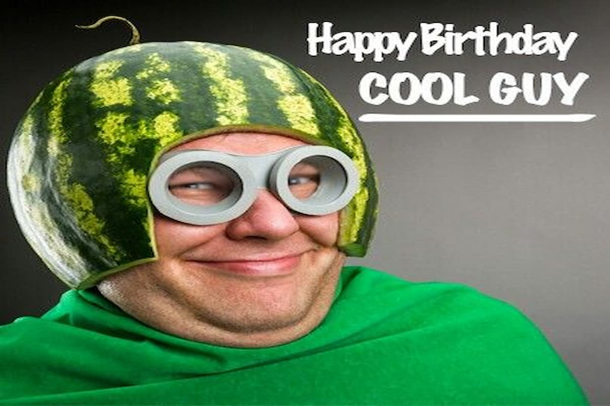

Адаптивные изображения
1. Базовое адаптивное изображение

Что происходит:
- Изображение занимает 100% ширины контейнера.
- Высота автоматически рассчитывается для сохранения пропорций.
- Работает на всех устройствах.
2. Picture element с форматами
Что происходит:
- Браузер выбирает лучший формат (WebP или JPEG).
- Автоматическое переключение между форматами.
- Фолбэк для старых браузеров.
3. Разные изображения для разных экранов
Что происходит:
- Десктопы (1200px+): wide-desktop.jpg
- Планшеты (768px-1199px): tablet.jpg
- Мобильные (до 767px): mobile.jpg
- Браузер сам выбирает подходящее изображение.
4. Поддержка Retina дисплеев

Что происходит:
- Обычные экраны: icon@1x.png
- Retina экраны: icon@2x.png (в 2 раза четче)
- Автоматическое определение плотности пикселей.
5. Object-fit свойства
object-fit: cover
object-fit: contain
object-fit: fill
Что происходит:
- cover — заполняет контейнер, обрезая края.
- contain — вписывает полностью, могут быть поля.
- fill — растягивает, искажая пропорции.
6. Адаптивная галерея (без обрезки)
Что происходит:
- На десктопах: 4 изображения в ряд, пропорциональное масштабирование.
- На мобильных: 1 изображение в ряд, полная видимость.
- Особенности: Никакой обрезки, плавное масштабирование, сохранение пропорций.